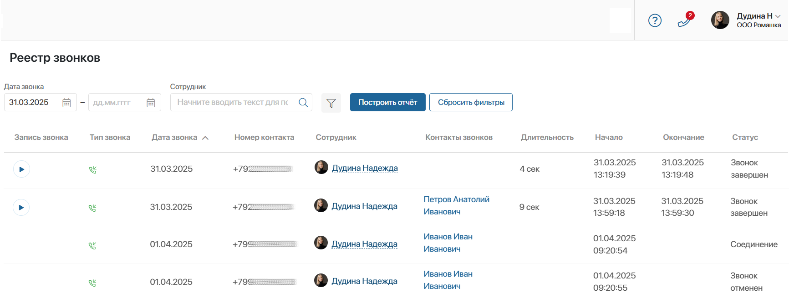

Данные о звонках, которые поступают и обрабатываются в ELMA365, хранятся в разделе Телефония.
В его состав входит:
- приложение Звонки — во время вызова в приложении создаётся элемент с информацией о звонке. Можно отследить статус звонка и просмотреть информацию по нему;
- страница Реестр звонков — в таблице собираются записи о вызовах. Вы можете искать записи о звонках по параметрам, например, только входящие или звонки определённого менеджера;
- служебное приложение Контакты звонков — в нём автоматически фиксируются контактные данные клиентов для отображения в реестре звонков. Приложение не предназначено для работы пользователей. В нём не нужно выполнять настройки, изменения приведут к ошибкам в работе телефонии.
Начало внимание
Раздел Телефония доступен при активации одного из платных решений CRM, в состав которого входит решение ELMA365 Управление коммуникациями.
Конец внимание
Звонки
В приложении автоматически создаются записи обо всех звонках в ELMA365. Сотрудник может просмотреть информацию о вызовах, отследить их статусы, прослушать запись разговора и т. д.

С помощью настроенного в приложении иерархического справочника элементы отсортированы по папкам:
- Все — можно просмотреть все записи о звонках;
- Входящие — отображаются только поступившие в систему вызовы;
- Исходящие — отображаются только инициированные менеджером звонки.
По умолчанию записи представлены в виде канбан-доски, в которой показаны статусы звонков: Соединение, Идет разговор, Звонок завершен и т. д.
Нажмите на название звонка, чтобы открыть его карточку. В ней доступна следующая информация:
- длительность звонка;
- данные контакта;
- ФИО менеджера;
- связанные со звонком элементы других приложений, например, лиды или сделки;
- для завершённых звонков отображаются оставленные менеджером заметки и запись разговора.
Реестр звонков
С помощью реестра звонков руководитель может отслеживать взаимодействие менеджеров с клиентами, а определённый сотрудник может находить записи о своих звонках и использовать данные для работы с продажами.
На странице Реестр звонков все звонки отображаются в виде таблицы.

Вы можете:
- просмотреть данные о звонках: его тип, дату, длительность, статус и т. д.;
- с помощью преднастроенных фильтров найти нужный вызов. Для этого задайте условия поиска и нажмите кнопку Построить отчёт;
- прослушать запись разговора. Срок хранения записей определяется провайдером. В течение этого срока вы можете прослушать и загрузить записи себе на компьютер. Если запись удалена провайдером, вы увидите сообщение об ошибке.
Администратор системы может изменить настройки реестра: выбрать параметры для фильтрации и свойства приложения Звонки для отображения в таблице. Подробнее о том, как это сделать, читайте в статье «Виджет „Реестр звонков“».
Экспорт и импорт раздела «Телефония»
Вы можете перенести в другую компанию раздел Телефония, чтобы экспортировать:
- данные приложения Звонки и страницы Реестр звонков;
- настройки карточки звонка;
- настройки карточки сводной информации по звонку.
Для этого напротив названия раздела нажмите значок шестерёнки и выберите Экспорт раздела. После проверки сохраните полученный файл формата .е365. Подробнее читайте в статье «Экспорт раздела».
Чтобы во время звонка клиент идентифицировался корректно, в новой компании должно быть такое же приложение с контактами, которое привязано к телефонии в разделе Администрирование > Настройка звонка. Если это пользовательское приложение:
- создайте решение, включив в его состав раздел Телефония и приложение с контактами. Перенесите решение в другую компанию;
- используйте экспорт конфигурации.
Чтобы загрузить данные раздела Телефония и параметры карточек, импортируйте файл формата .е365 в новую компанию.